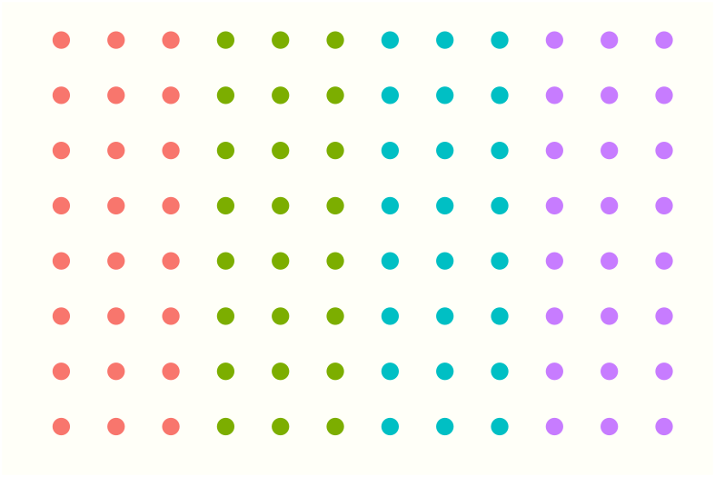
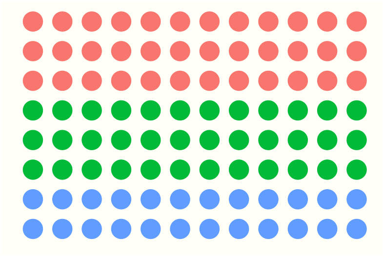

gplate introduces a grammar of plates.
Microwell plates are usually arranged in visually meaningful ways but are not tidy data, and their manipulation to and from a tidy form is cumbersome. gplate is aimed at both developers that create packages that ingest and produce plate data as well as for interactive operating on microwell data.
Installation
You can install the development version from GitHub with:
# install.packages("devtools")
devtools::install_github("KaiAragaki/gplate")Creating plates with gplate
Creating a plate plot is simple:
 We can add rectangular ‘sections’ to our plates:
We can add rectangular ‘sections’ to our plates:

These sections can have sections of their own, just by layering one gp_sec on the other.
gp(rows = 16, cols = 24) |>
gp_sec("my_section", nrow = 12, ncol = 6) |>
gp_sec("secsec", nrow = 3, ncol = 3) |>
gp_plot(secsec)
gplate also has a theme - gp_mini_theme - that lets you create sparkline-esque plates.
mini_plot_cols <- gp(8, 12) |>
gp_sec(name = "primers", ncol = 3) |>
gp_plot(primers) +
gp_mini_theme()
ggplot2::ggsave(filename = "./man/figures/mini-plot_cols.png",
plot = mini_plot_cols,
height = 0.5,
width = 0.75,
units = "in",
scale = 3.5)
mini_plot_rows <- gp(8, 12) |>
gp_sec(name = "primers", nrow = 3) |>
gp_plot(primers) +
gp_mini_theme()
ggplot2::ggsave(filename = "./man/figures/mini-plot_rows.png",
plot = mini_plot_rows,
height = 0.5,
width = 0.75,
units = "in",
scale = 3.5)For instance:
You should align your primers in columns  instead of in rows 